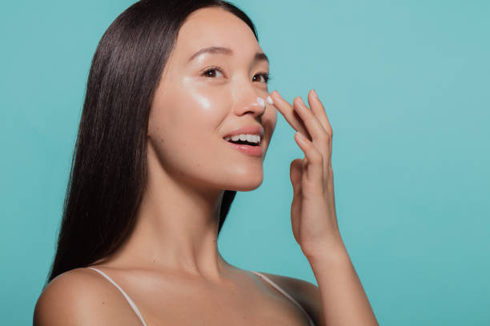

Datos Curiosos
Corea del Sur tiene una de las industrias de belleza más innovadoras y curiosas del mundo. Aquí tienes algunos datos curiosos sobre la belleza en Corea que probablemente te sorprendan:
El “aegyo-sal” está de moda
1Es una pequeña bolsita de grasa bajo los ojos que se considera atractiva y juvenil. Muchas chicas lo maquillan para resaltarlo.
- El protector solar es indispensable Se usa diariamente, incluso en días nublados, y se reaplica varias veces al día. Tener la piel clara es un ideal de belleza tradicional.
- Los hombres también tienen rutinas de cuidado de la piel Corea del Sur es uno de los países donde más productos cosméticos consumen los hombres. El maquillaje masculino (BB cream, labiales hidratantes, correctores) es muy común.
- Las cirugías estéticas son muy frecuentes Se estima que 1 de cada 3 mujeres jóvenes en Seúl se ha sometido a algún procedimiento estético. La cirugía más común es la blefaroplastia (para párpados dobles).

Card title
Some quick example text to build on the card title and make up the bulk of the card’s content.
- La piel de “glass skin” (piel de vidrio) No se trata de maquillaje, sino de lograr una piel tan hidratada y uniforme que brille como el cristal.
- Las tiendas de cosméticos son como parques temáticos En Corea, las tiendas de belleza tienen varios pisos, con tester de todo y hasta cabinas para que pruebes productos gratis.
- Los idols marcan tendencia Cantantes de K-pop influyen directamente en qué productos se vuelven populares, desde un labial hasta un corte de pelo.